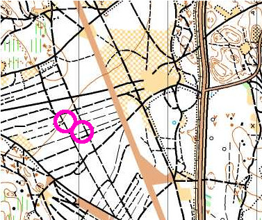
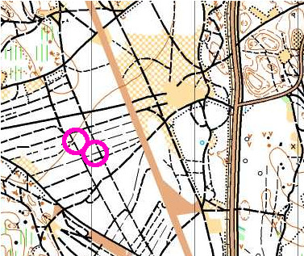

Jukola 2018
PM
PM hämtad från Jukolas hemsida.
| Etapp | Längd | Stigning | Löptid | Växlingstid |
| 1. | 10,9-11,1 km, skymning/natt | 240m | 67 min | 0:07 |
| 2. | 11,8-12,0 km, natt | 280m | 73 min | 1:02 |
| 3. | 12,6-12,8 km, natt/gryning | 340m | 78 min | 2:38 |
| 4. | 8,7- 8,8 km, gryning/dag | 220m | 50 min | 3:28 |
| 5. | 8,6- 8,7 km, dag | 220m | 48 min | 4:16 |
| 6. | 10,7- 10,8 km, dag | 320m | 60 min | 5:16 |
| 7. | 15,0- 15,1 km, dag | 480m | 84 min | |
| Totalt | 79,0 km | 2100m | 7 h 40 min | |
Kartan
Emils kommentar till terrängen:
Jag tror det kommer bli oerhört svårt. Det viktiga är att hela tiden veta vart man är på kartan, tappar man bort sig, blir det oerhört svårt att hitta tillbaka. Ta hellre ett kartstopp för mycket.
Viktigt att hålla fokus på kompassen då det är lätt att hamnar fel annars. Verkar vara en del gräs, sten och annan skit på marken som lätt gör att man hamnar ur rätt riktning. Verkar vara svårframkomligt de ställen som är svart prickade. Flera kommentarer om det från vägvalsuppgifterna.
Nedan finns kartan (klicka för stor version). Tävlingen går enbart väster om stora vägen som går igenom kartan. TC är vid flygplatsen precis väster om vägen.
 


Terrängbilder


Vägval